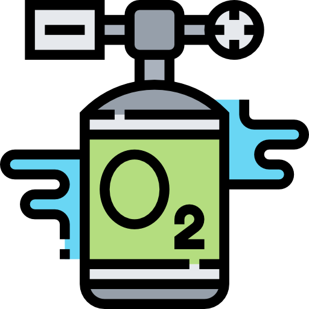
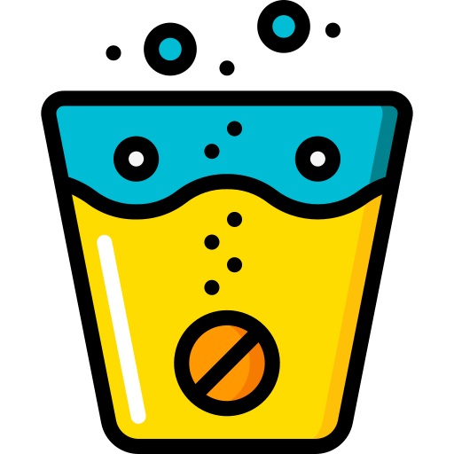
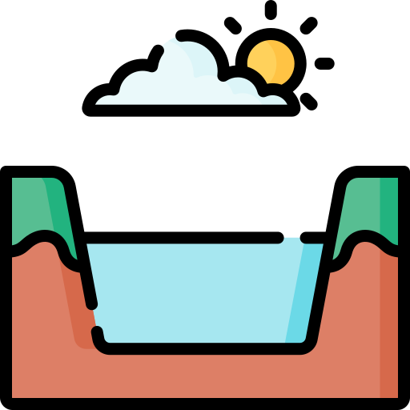

PARAMETERS

The amount of oxygen that is present in water. Water bodies receive oxygen from the atmosphere and from aquatic plants. Running water, such as that of a swift moving stream, dissolves more oxygen than the still water of a pond or lake.

Measurement of water’s ability to conduct electricity. EC is related to water temperature and the total concentration, mobility, valence and relative concentration of ions. Generally speaking, higher EC means more electrolytes in the water.

A measurement of the concentration of hydrogen ions in a water-based solution. A lower pH means that there are more hydrogen ions in the liquid, whereas a higher pH indicates fewer hydrogen ions in the liquid.

Refer to any minerals, salts, metals, cations or anions dissolved in water. Total dissolved solids (TDS) comprise inorganic salts, principally calcium, magnesium, potassium, sodium, bicarbonates, chlorides, and sulfates and some small amounts of organic matter that are dissolved in water.

Temperature affects aquatic organisms in a variety of ways. The body temperature of most aquatic organisms is the same as the surrounding water and fluctuates with the water temperature.

Measure of relative clarity of a liquid. It is an optical characteristic of water and is a measurement of the amount of light that is scattered by material in the water when a light is shined through the water sample. Material that causes water to be turbid include clay, silt, very tiny inorganic and organic matter, algae, dissolved colored organic compounds, and plankton and other microscopic organisms.